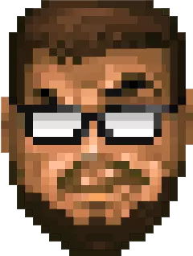

Screenshots on website from the game DOOM II by
ID Software I am NOT affiliated with ID Software, or own DOOM.
All credit goes to ID Software and their respective owners.
Project Navigation Controls
I love playing with all kinds of tech, from old to new. I have an old school mindset and this tend to translate into the work that I do. In my spare time I like to play a lot of old school games, pick up a new programming languages, or start a new project
and just plug away at that. Link to my resume
here that includes the languages and projects I've worked
on, otherwise I can also be contacted at the email address below.

My role in the group was to combine, test, and ensure we had a deliverable to show off every week. I also had to be able to sit town with team members and have them talk about their additions so that we could log it, and assist in any debugging and merging
since that fell into my job role.This was my Capstone project at CVTC and my test for everything I had learned.
Done as part of UW-Stout's 2020 STEMM expo as an experiment with Unity's AI, to see what could be achieved that would run sufficiently on low end hardware. The main goal was to achieve high volume groups, that would dynamically chase a target, while avoiding,
moving around, and adapting to the environment around them.
A program i made using Visual Studio (2015 initially, updated to 2017), it uses a GUI to allow the user to add, remove, and edit games connected to a mySQL Database and then upon execution does a sort of "spin" to run through all the games and select
one, complete with fun sound effects!
A game I created using Swift 2.0, it's more or less a clone of the classic Asteroids game from way back in the day. It is developed to scale gracefully depending on the size of the phone, and has states for playing, power ups, and game over conditions.
My first time using Unity, this is a 2D sidescroller game built for touchscreen Android devices, made with Haley Peterson (artist) at UW-Stout for my GDD 200 class 2019. In this game you play as a little ghost boy in their quest to restore color to the
bleak world, with a unique mechanic of using an Android devices built in gyroscope to control where the flashlight you use aims, using it to cut through the dark and expose the world of color below to solve puzzles & progress.
Made at Stout in my GDD 325 class 2019, with Collin Diekvoss (Programmer), Lex Klusman (Artist), and Joshua Haakana (Artist) in Lackluster your goal is to activate all the orbs in order to restore the light to the world. The game was made using Phaser
3.0, and made use of an npm server on the back end, the ultimate goal was to make a fun, easy to play game for the Madison Children's Museum to put on as an interactive exhibit.
Part of my 450 GDD Capstone Fall 2019-Spring 2020, a 3D action adventure game made in Unity, You play as a shipwrecked Viking who has crashed on an island within the arctic. Fitted with only your fishing rod, you set out to catch fish in order to survive
the ordeal. After wandering the island for a time, you discover an altar deep within the island dedicated to Njord, God of the Sea. Offering some of your bounty to Njord, he aids you by turning your rod into a weapon capable of surviving
the terrors of the night to come...